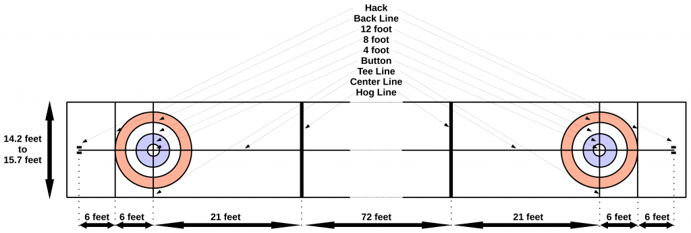
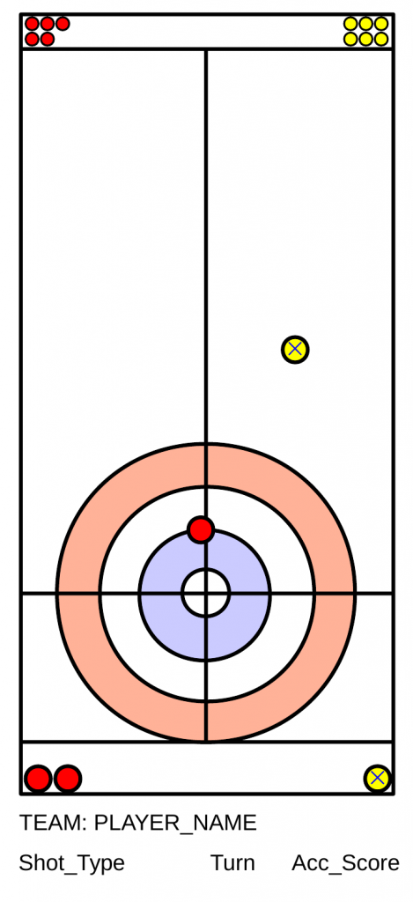
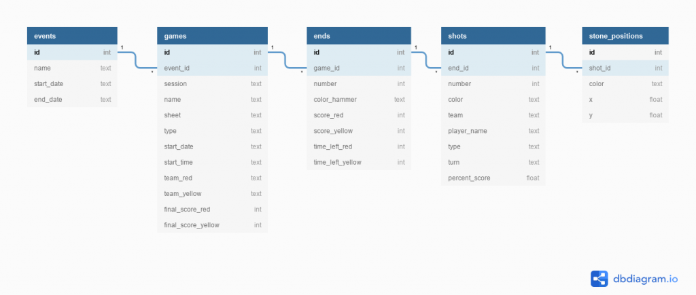
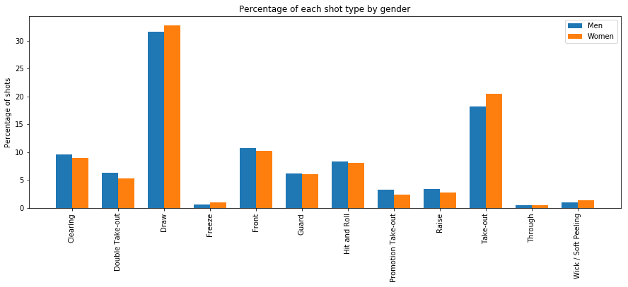
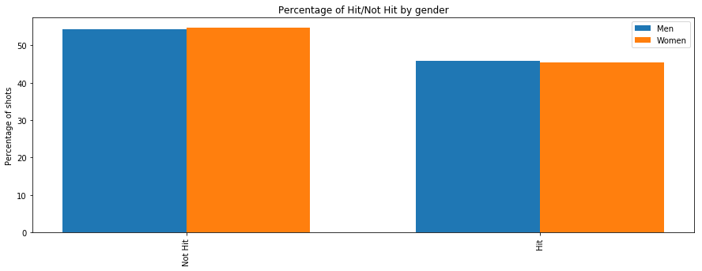
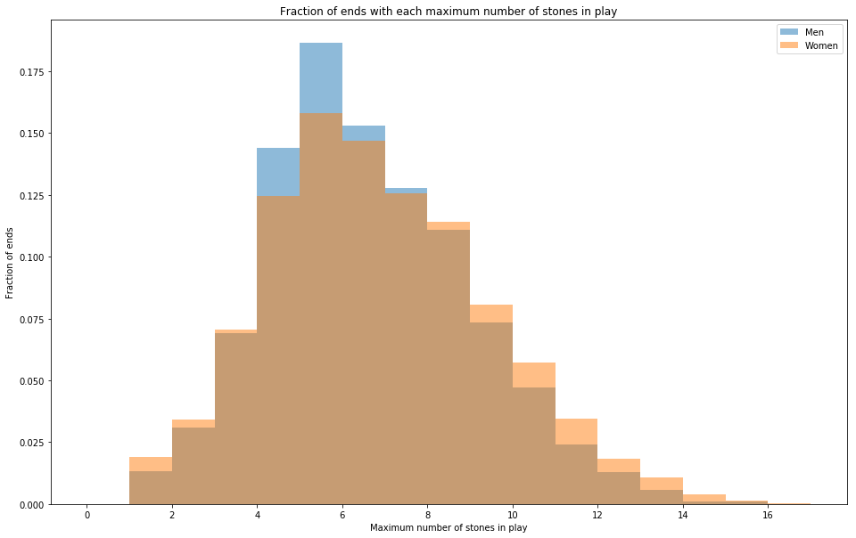

Growing up in Canada, curling is a very popular sport, which I have played both competitively and socially at different points in my life. As it turns out, there is a wealth of data available on curling games, but it is mostly available in the form of PDF documents with diagrams of the playing area (that is, not readily analyzable). In this “Curling Analytics” project, I extract this data into an SQL database, and perform analyses of it.
In this case, the “wealth of data” consists of 1,269 games spread across 24 events, for a total of 182,775 shots across 11,472 ends. There is a lot that can be done with this data, so stay tuned for future analyses! Currently, this project is broken down into the following sections:
You can find all the code written for this project here on my GitHub.
Further analyses of this data are written up on their own dedicated pages. You can find them here:
In the sport of curling (as traditionally played), in each game two teams of 4 players each play against each other. The game is played on a sheet of ice, which looks like this:

A player launches from the hack on one end of the sheet with a stone in hand, slides out, and releases the stone before crossing the closest hack line to them. A stone is in play if it is past the hack line on the other end of the sheet, but not past the back line on that end.
In each round (called an end) each player throws two stones, with successive shots alternating between the two teams. The team to throw the last stone in the end is said to have last rock advantage, also known as the hammer. Which team gets the hammer in the first end is decided by coin toss, with the other team getting their choice of stone color. When a team scores in an end, the other team has the hammer in the next end. As a matter of strategy, it is generally considered not worthwhile to give up the hammer for only one point. Curling games are typically 8 or 10 ends in length, and at the end of the game the team with the most points wins. In the event of a tie, sometimes an extra end is played, though in some cases the game is just decided by which team can throw a stone closest to the button.
The scoring at the end of each end is done by examining the stone configuration in the house, which is made up of the button, and three concentric rings (the 4 foot, 8 foot, and 12 foot, all named by their outer diameter.) Rocks that are inside (or at the very least in contact with, called biting) the house can count for points. At the end of the end, the team with the stone closest to the center of the button (the pin) scores points, and the number of points scored is equal to the number of stones they have in the house that are closer to the pin than any of the opposing team’s stones.
The four positions of each team are named according to the typical shot order:
The Skip is the player that “calls the shots”, standing on the side of the sheet with the stones in play, determining the strategy for the game, directing the throwing player where to aim, which direction turn to put on the stone, and how hard to throw it. While one player is throwing, the other two players follow their stone down the ice, sweeping in front of it to help it move farther or stay on a straighter path, as needed. The Skip will typically direct them in matters of straightness (as they can see the angles), but the two players sweeping have a better idea whether the rock needs to be swept for speed.
When it is time for the Skip to throw their stones, the Vice comes down to the side of the sheet with the stones in play, confers with the Skip on strategy, and plays the Skip’s roll for the Skip’s shot.
In this dataset, there are the following types of shots called:
There is one additional rule concerning shot types that is worth explaining, called the 4 rock free guard zone. At the beginning of each end, 4 stones must be thrown before any stones in play outside of the house and between the tee-line and the hog line can be removed from play. This is nominally to prevent “each team just removes the opposing team’s stone from play with their shot” from being the best strategic play (that would make for a very boring game!).
Now that we understand the basics of curling, let’s start digging into the data!
As the world governing body of the Olympic and Paralympic Winter Sport of Curling, the World Curling Federation produces (and makes available) shot-by-shot summary PDF documents of most games in the World-level events under their purview. For each shot, the information is typically formatted as:

I used a python script to traverse the directory structure where these shot-by-shot summaries are stored, extracting information on the event name, game name, and whether it is a Men’s or Women’s game from the directory path. Using the Linux “pdftohtml -xml” command to convert the PDF files into XML, I was able to extract the above shot-by-shot textual information using the positions provided in the XML tags, and knowledge of the relative positions of this information relative to the diagram of the area in play. These pages can also include a box with information on the score and the time remaining for each team, which I also extracted using relative positions in the XML document.
Extracting the stone positions from the diagram of the area in play posed more of a challenge. Looking through a few of the shot-by-shot summaries, thankfully the following rules tend to hold:
With this information and Python’s OpenCV2 module, I defined a mask for each stone’s color profile, and found the contours in the mask, taking their centroids to get the stone positions. The size and position of stones allowed me to filter out stones that were out of play, and to determine the direction of play (based on the location of the smaller, unplayed stones) and match a team’s country code to its rock color (based on which team has only 7 stones left unplayed after the first shot).
The only minor frustration with the stone positions is that based on measuring the diameters of the rings, the diagram is not actually a to-scale representation of the curling sheet. So instead of converting to a unit of measurement, stone positions are stored as pixel positions. However, I did standardize to the “down” direction of play (house at the bottom, as the skip would see it), and converted the coordinate system so that (0,0) is at the center of the button.
With the problem of extracting the data solved, let’s discuss how I chose to store it.
Looking at the structure of a curling competitive event gives us a clear hierarchical structure:
So, it makes sense to reproduce this hierarchical structure in an SQL database with a table for each step of the hierarchy, each containing a foreign key referencing the next step up the hierarchy. I chose SQLite for this database, since the database is relatively simple and small, and doesn’t require remote access by multiple users. This SQL database has the following schema (produced using dbdiagram.io):

Let’s now go through each table and define the contents of each of the columns.
Although I was pretty careful to test my data extraction code as I went along, once I had completed extracting the data from the PDF shot-by-shot summaries, I went through each table in the database column-by-column, to check whether the extracted data was reasonable. The full Jupyter notebook with this exploration is here on my GitHub.
To summarize some of the more impactful or interesting observations:
I also produced a plot during this initial exploration that is worth discussing here. As a check on the validity of the positions stored in the stone_positions table, I produced a heat map of all the stone positions. Recall that in stone_positions, all positions are oriented with the house at the bottom, and the center of the button (“the pin”) at (0,0), with positive x going to the right, negative x going to the left, positive y towards the hog line, and negative y towards the back line. The range of this plot is based on the range of positions in the stone_positions table, and given the nearly 700,000 positions it contains, the full range of the area in play should be covered. To further guide the eye, we should also note that the back line (minimum y) and the front of the house should be equidistant from (0,0). Without further ado, here is the plot:
So, what do we see here?
So, the initial exploration of the data shows that it looks reasonable, with a few caveats based on which table columns are being used. In particular, the stone_positions table also shows that popular positions make sense in the context of basic curling strategy. With the data sufficiently understood, let’s proceed to some more in-depth analyses.
Growing up a young curler, there was a well-known gender stereotype concerning a difference in strategy between Men’s and Women’s games. It can be summarized as this:
Or, more succinctly, “Men prefer to hit more than Women.”
In fact, I even remember one coach claiming that because of this, he preferred to watch Women’s games over Men’s games, because less hitting means more stones in play, which makes for more complicated shots to watch the players make.
So not only is this difference between Men and Women claimed to exist, it is also claimed to be so pronounced that it is readily apparent to someone watching a curling game. This data set contains data for over 80,000 shots for Men and Women each, spread out over 5,000 ends each, so this data set should be more than sufficient to spot such an apparently obvious difference.
The nature of this stereotype gives us two main options for checking its veracity from the data:
Both of these analyses strike to the heart of the stereotype. The Shot Type Analysis looks directly at the strategy preferences of Women vs. Men with regards to hits. The Stones in Play Analysis addresses the part of the stereotype that correlates less hitting with more rocks in play. We will therefore look at this claim from both directions, acting as a cross-check of each other.
For both analyses, we can produce histograms or bar charts of the relevant quantities, and generate contingency tables from these plots to feed into a χ² test to determine the statistical significance of any difference we observe.
Before proceeding to the analyses, we need to make an important distinction. Both of these datasets are pretty large: 80,000 shots for Men and Women each, and 5000 ends for Men and Women each. This is ostensibly enough data that we could find a statistically significant difference between Men and Women that is nonetheless too small to perceive on the scale of one game. Remember, the stereotype we are looking into includes the claim that it is obvious to the average person watching a game. So in both analyses, we should use the whole dataset to determine the average shot type or maximum stones in play distribution, and apply it to a game (80 shots by one team), and see whether it is statistically significant (i.e. something a viewer could see) while watching one game.
In all cases, our null hypothesis is that Men and Women call hits equally, and we set our threshold to reject the null hypothesis if p < 0.05.
The full Jupyter notebook for this analysis can be found here on my GitHub.
As we discussed earlier in “A Brief Introduction to Curling”, the various shot types called by the skip are included in the shot-by-shot summaries, and have been tabulated in the SQL database. Cleaning this data further by filtering out instances of “None”, “no statistics”, and “not played”, and merging the “through” and “Through” shot types into “Through”, we find that we have 93,112 shots from Men’s games, and 84,818 shots from Women’s games to consider. Having an unequal number of shots for Men and Women, we plot the percentage of each shot type by gender.

Taking a broad first look, the stereotype appears to be on shaky ground, as the percentages of each shot type for Men and Women appear to be remarkably similar. Furthermore, the “Take-out” shot type, the most common type of hit, is actually called by Women MORE than it is by Men. That said, the higher power, more difficult hits (Clearing, Double Take-out, and Promotion Take-out) are called slightly more by Men than Women, but this is still not much of a difference.
Feeding the shot type data into a χ² test tells us that there is definitely a statistically significant difference between the shots called by Men and Women (p = 2 × 10−110), at least on the scale of the full dataset.
However, the stereotype claims that the difference between Men and Women is obvious when you are watching a game. So if we use the fraction of each shot type to get a shot type distribution for a team’s shots in one game (a total of 80 shots), we would expect to see a statistically significant difference between Men and Women. Alas, we do not (p = 0.9999987). So we are forced to conclude that yes, there is a difference in the shots called by Men and Women, but no, it is not big enough to see when you are watching a curling game.
This shot type comparison was ultimately more fine-grained than the stereotype claimed. To answer the question of “Do Men hit more than Women?”, we should categorize all of the shot types as either “Hit” or “Not Hit”, and repeat the analysis with only those two shot categories. A Draw obviously falls under “Not Hit”, and a Take-out obviously falls under “Hit”, but some shot types straddle the boundary, and require a judgement call:
So, this gives us the following shot types in each category:
| Hit | Not Hit |
| Clearing | Draw |
| Double Take-out | Freeze |
| Hit and Roll | Front |
| Promotion Take-out | Guard |
| Take-out | Raise |
| Through | |
| Wick / Soft Peeling |
With these categories in mind, here are how the fractions of “Hit” and “Not Hit” shots break down between Men and Women:

This comparison seems to make Men and Women look even closer, though here Men take a slight edge over Women in percentage of Hit type shots. Performing the χ² test on the Hit/Not Hit counts for Men and Women in the dataset gives us a p-value of p = 0.07, which just misses the threshold of 0.05 for rejecting the null hypothesis that Men and Women call Hits equally. It goes without calculating that if we don’t see a statistically significant effect on the scale of the full dataset of shots, a “Hit” vs. “Not Hit” difference between Men and Women would certainly not be noticeable on the scale of a game or even a whole event.
In conclusion, I can’t find any support in the shot type data for the stereotype that Men call hit shots more than Women. There is definitely a statistically significant difference between the shot types called by Men and Women (that may be worthy of further probing in a future analysis), but this difference is small enough that you wouldn’t notice it on the scale of an individual game.
This analysis approaches the stereotype from a different angle. If Men are truly executing proportionally more hits than Women, then since hits typically remove stones from play, we should see Women’s games having more rocks in play. Remember this was part of the stereotype: that Women hitting less results in more stones in play, making for trickier shots and therefore a more interesting game.
We can evaluate this claim simply by finding the maximum number of stones in play in each end in our SQL database. This gives us maximum stone counts for 5986 ends in Men’s games, and 5485 ends in Women’s games. So, we plot a histogram of the fraction of ends with each maximum number of stones in play, for Men and for Women:

Looking at this plot, once again the Men’s and Women’s distributions are pretty similar. Both are peaked at 5 stones in play, though the Men’s distribution is more strongly peaked there (Women’s games having a slightly higher percentage of games with both higher AND lower maximum stone counts).
Performing a χ² test on the maximum number of stones in play data, we find p = 5 × 10−10, so these two distributions are indeed statistically significantly different from each other.
However, given how similar they look, we once again wonder whether your average game viewer would be able to detect this difference. Using the distributions above, we produce maximum number of stones in play counts for 1000 ends (an event with 100 games of 10 ends each). Here, the χ² test gives us p = 0.6, which is not even close to our threshold for rejecting the null hypothesis. So the observed difference between the maximum number of stones in play between Men’s games and Women’s games is not noticeable in an event of 100 games, let alone a single game. So, the contention that Women’s games have more stones in play, and are more interesting to watch as a result, doesn’t seem to hold any water.
We have examined the stereotype that Men prefer to hit more than Women from two angles: looking at the shot types called by the skip, and looking at the maximum number of stones in play. Based on what I had heard growing up a young curler, I was expecting a very pronounced difference between the Men’s games and the Women’s games, but the data does not seem to back that up. In both analysis methods we found that there are statistically significant differences between the Men’s and Women’s games, but that these differences are not large enough to be detected by someone watching a single game, or in the case of the maximum number of stones in play, an entire event full of games. Since this stereotype also claims to be obvious, this data does not support the stereotype.
Note, however, I referred to “this data”. Something important to keep in mind here is that this dataset is filled with games at the international competition level, where each country competing is sending its very best curling team. If the magnitude of this stereotype is inversely correlated with the skill level of the players, we would not see it at this level of play. (Indeed, any novice curler will tell you that hits are some of the hardest shots to make!) Data on lower level games is probably much more difficult to find, so this hypothesis will have to go untested for now.
Another aspect not considered here was varying skill levels between the different teams. I was always coached that when facing a superior team that could hit with high accuracy, the better strategy is to “play the junk game”, to force the opposing team to make trickier finesse shots in order to win. This effect may also be smaller at this high level of play, but there are definitely teams that always tend to do well, and teams that may rarely make it to international competition, so it would be interesting to see how the shot types called change when comparing the accuracy score for the shots made by each team.
On a similar note, I suspect that the shot type preferences may vary team-to-team anyway. A big part of effective curling strategy is to tailor your strategy to the skill level of your players. Each team may therefore have its own preferences, and it would be interesting to see how this compares to the average we saw in the Men and Women shot type comparison.
Finally, the logical next extension of these analyses is into a second dimension: time. The strategy at the beginning of an end tends to weigh heavily towards guards and draws, with more take-outs towards the end of the end. Furthermore, as a game progresses, if your team is winning, you will probably pursue a “keep it clean” strategy, to try and hold on to your lead. Could differences between how Men and Women play the game manifest when considering this time variation? What about considering the score differential? Similarly, we could look at the number of stones in play after each shot in each end, instead of just the maximum number.
In closing, the stereotype that there is an obvious preference for Men to hit more than Women does not appear to be supported by the data. There are definitely some differences between how Men and Women play the game, but on aggregate these differences seem too small to detect on the scale of an individual game. However, this study has barely scratched the surface of what can be investigated with this dataset, so stay tuned for future analyses!